Nessa página apresentaremos alguns exercícios de cálculo de matrizes e suas resoluções. Em caso de dúvidas adicionais, recomenda-se acessar a página sobre o que são as matrizes através do botão abaixo.
O QUE SÃO MATRIZES?Questão 1) A+B
Questão 2) C-B
Questão 3)3 * A
Questão 4) -3A + 2B
Questão 5) (3A) * B
Questão 6) calcule a determinante de B
Para encontrarmos o resultado de A+B devemos somar os elementos de mesma posição:
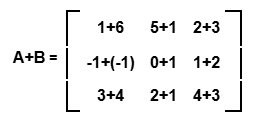Após as somas feitas teremos como resultado final, uma terceira matriz a qual chamaremos de matriz D:
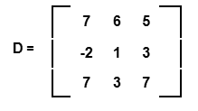Para encontrarmos o resultado de C-B devemos subtrair os elementos de mesma posição:
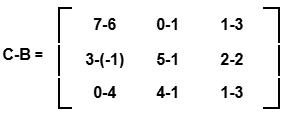Após as subtrações feitas teremos como resultado final, uma terceira matriz a qual chamaremos de matriz E:
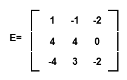Para encontrarmos o resultado de 3*A devemos multiplicar todos os elementos da matriz por 3:
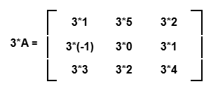O qual após todas as multiplicações feitas teremos como resultado final, uma terceira matriz a qual chamaremos de matriz 3A:
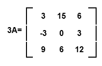Para calcularmos -3A+2B, inicialmente devemos descobrir os valores de -3A e 2B, sendo assim multiplicamos os elementos da Matriz A por -3 e da matriz B por 2:
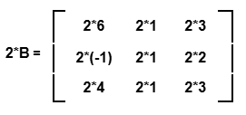 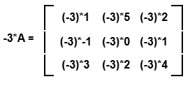Feito os cálculos teremos:
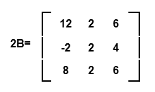 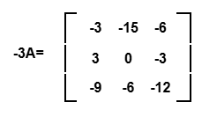Agora sabendo os valores das matrizes, devemos somar seus elementos de mesma posição:
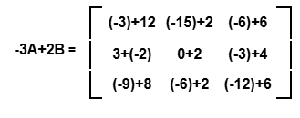E como resultado final teremos uma terceira matriz o qual chamaremos de matriz F:
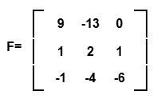Para calcularmos (3A)*B devemos inicialmente descobrir o valor de 3A, sendo assim multiplicamos os elementos de A por 3:
No qual teremos como resultado:
Agora que sabemos os valores das matrizes que serão multiplicadas, devemos separar a primeira em linhas e a segunda em colunas:
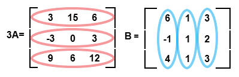O valor de cada elemento da matriz resultante será a soma das multiplicações entre os elementos de uma linha da primeira matriz e os elementos correspondentes de uma coluna da segunda matriz. Em outras palavras, para calcular um elemento da matriz resultante, você deve multiplicar o primeiro elemento da linha da primeira matriz pelo primeiro elemento da coluna da segunda matriz, depois multiplicar o segundo elemento da linha da primeira matriz pelo segundo elemento da coluna da segunda matriz, e assim por diante, até o final da linha e da coluna. A soma dessas multiplicações vai gerar o valor do elemento na matriz resultante.
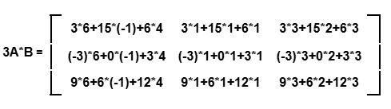Feito as multiplicações teremos:
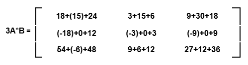Finalizando as somatorias teremos nossa terceira matriz a qual chamaremos de Matriz G:
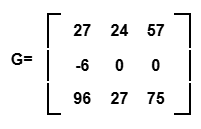Para descobrirmos a Determinante de B, repetimos as colunas da matriz, até a penúltima da direita para a esquerda, no lado direito da matriz. Com isso feito, calcula-se a multiplicação dos elementos das diagonais de cima para baixo e ocorre a somatória dos resultados, subtraídos pela multiplicação e somatoria dos elementos da diagonal secundaria, de baixo para cima.
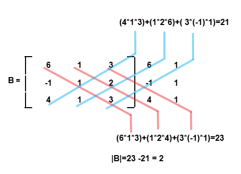